WoW Forever builds
67 talent builds for all nine classes, each with a level-by-level order from 10 to 60 and a calculator link. Meta builds are what most players run; off-meta builds are the uncommon ones that can work.
Compare two builds side by side →
Warrior · Paladin · Hunter · Rogue · Priest · Shaman · Mage · Warlock · Druid
 Warrior6 builds
Warrior6 builds
Meta 5The builds most players run.
 Arms two-hander
Arms two-hander
Two-hander Mortal Strike build with Weaponmaster, Improved Slam and Bloodthrill, dipping Fury for Cruelty, Unbridled Wrath, Enrage and Reckless Swings.
Split 32 / 19 / 0 · level order →
Raid ✓ Nov 25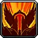
Fury dual-wieldDual-wield Bloodthirst build with Flurry, Furious Precision, Improved Whirlwind and full Dual Wield Specialization, taking Arms down to Impale and Anger Management.
Split 17 / 34 / 0 · level order →
Tank ✓ Nov 25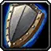
Protection shield tankShield Slam tank with Bastion, Defiance, Focused Rage and full Anticipation; Arms gives Deep Wounds and Impale so your crits add threat, plus Cruelty from Fury.
Split 17 / 2 / 32 · level order →
Leveling ✓ Nov 25Arms leveling
Rend, Overpower and Deep Wounds early, Sweeping Strikes at 30, Mortal Strike at 40, then Fury for crit and rage.
Split 31 / 20 / 0 · level order →
PvP ✓ Nov 25Arms PvP
Mortal Strike with Improved Hamstring 3 to stop kiting, plus Fury for Cruelty, Enrage and Piercing Howl.
Split 31 / 20 / 0 · level order →
 Paladin10 builds
Paladin10 builds
Meta 6The builds most players run.
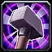
Retribution two-handerVengeance, Champion of the Light and Unsealed Wrath with a two-hander, plus Improved Seals and Holy Conduit from Holy and Divine Intellect and Precision for hit.
Split 12 / 8 / 31 · level order →
Tank ✓ Nov 25Protection raid tank
Deep Protection to Shieldsworn with Holy Shield, Reckoning, Iron Creed and full Anticipation for the Defense cap, plus Deflection for 5% parry, Sanctified Judgement for mana and Improved Judgement for faster taunts from Retribution.
Split 0 / 35 / 16 · level order →
Tank ✓ Nov 25Protection dungeon tank
The raid build without Anticipation – you rarely need the Defense cap in dungeons – so the points go to Guardian's Favor and to Vindication, which lowers the Attack Power of everything you hit.
Split 0 / 32 / 19 · level order →
Healer ✓ Nov 25Holy healer
Illumination, Holy Shock, Boundless Light, Holy Power and Light's Vigil, with Divine Intellect and Sacred Duty from Protection, and Benediction, Conviction and Sanctified Judgement from Retribution for mana and crit.
Split 31 / 7 / 13 · level order →
Leveling ✓ Nov 25Retribution leveling
Benediction, Conviction and Seal of Command first, Repentance at 30 and Unsealed Wrath at 40, then Divine Strength, Improved Seals and Deflection for parry.
Split 15 / 0 / 36 · level order →
PvP ✓ Nov 25Holy PvP healer
The full healing Holy tree plus Toughness, Redoubt and Divine Intellect for survival; no Retribution.
Split 32 / 19 / 0 · level order →
Off-meta 4Uncommon builds that can work.
Shockadin (two-hander + Holy Shock)
A two-hander Retribution base stopping at Champion of the Light, with Holy down to Holy Shock so you can Shock and Consecrate between swings.
Split 23 / 0 / 28 · level order →
DPS ✓ Nov 25Shockadin endgame
Level-60 Shockadin: 23 Holy for Divine Strength, Improved Seals, Divine Favor and Holy Shock, 8 Protection for Divine Intellect and Precision, and 20 Retribution for Seal of Command, Vindication and Two-Handed Weapon Specialization.
Split 23 / 8 / 20 · level order →
Tank ✓ Nov 25Holy Shock tank (Holy/Protection)
A shield tank that swaps deep Protection for Holy Shock, Illumination and Improved Seals while keeping Holy Shield, Swift Judgement and Improved Righteous Fury.
Split 27 / 24 / 0 · level order →
Leveling ✓ Nov 25Shockadin leveling
Two-hander leveling Shockadin: Seal of Command at 20, then Holy for Divine Strength, Improved Seals and Holy Shock at 46 – an instant ranged hit or heal between swings – then Vengeance, Champion of the Light and Consecrated Ground to finish.
Split 23 / 0 / 28 · level order →
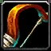
Hunter7 builds
Meta 5The builds most players run.
Beast Mastery
Pet-centred damage: Frenzy, Ferocity and Bestial Wrath on the pet, with Marksmanship picked up to Mortal Shots for your own crits and Trueshot Aura.
Split 31 / 20 / 0 · level order →
Raid ✓ Nov 25Marksmanship Lone Wolf
Petless deep Marksmanship: Lone Wolf for +20% damage, Sniper Shot, Barrage and Ranged Weapon Specialization, with Deadly Aspects for Auto Shot haste and Improved Tracking from Survival.
Split 5 / 41 / 5 · level order →
Raid ✓ Nov 25 Survival Lone Wolf
Survival Lone Wolf
Lone Wolf Survival that weaves Mongoose Bite, Strider Kick and Lacerating Strikes bleeds between shots, scaling off the 15% Agility from Lightning Reflexes, with Marksmanship for Lone Wolf, Trueshot Aura and Mortal Shots.
Split 0 / 20 / 31 · level order →
Leveling ✓ Nov 25Beast Mastery leveling
Let the pet tank and kill: Improved Revive Pet and Pathfinding early, Summon Hawk and Intimidation mid-way, Bestial Wrath at 40, then Marksmanship crit and Trueshot Aura.
Split 33 / 18 / 0 · level order →
PvP ✓ Nov 25Marksmanship PvP
Ranged burst with Sniper Shot and Mortal Shots plus lots of control: Improved Concussive Shot stuns, Scatter Shot, and Survival's Entrapment, Improved Wing Clip, Deterrence and Counterattack.
Split 0 / 31 / 20 · level order →
Off-meta 2Uncommon builds that can work.
Melee Survival with pet
Keeps the pet and goes properly melee: Predator's Edge, Expose Prey into Mongoose Bite, Lacerating Strikes bleeds and Strider Kick, with Deflection, Deterrence and Counterattack for survivability.
Split 7 / 11 / 33 · level order →
DPS ✓ Nov 25Marksmanship with pet
Deep Marksmanship to Sniper Shot but keeps a pet out, taking Beast Mastery's Unleashed Fury, Ferocity and Summon Hawk instead of Lone Wolf.
Split 20 / 31 / 0 · level order →
Rogue6 builds
Meta 5The builds most players run.
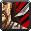
MutilateDual-dagger Mutilate with Venom, Relentless Strikes and Seal Fate, plus Combat for hit, Puncturing Wounds and cheaper Eviscerate.
Split 31 / 20 / 0 · level order →
Raid ✓ Nov 25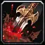
CombatSword, axe or mace in the main hand: Hack and Slash, Flash of Steel and Adrenaline Rush with Aggression and Weapon Expertise; Assassination for Malice, Ruthlessness, Lethality and Cold Blood.
Split 16 / 35 / 0 · level order →
Dungeon ✓ Nov 25Subtlety Hemorrhage / Death Mark
Hemorrhage, Boot Knife, Shank and Death Mark with Ambush openers, plus Malice and Improved Slice and Dice.
Split 11 / 9 / 31 · level order →
Leveling ✓ Nov 25Combat leveling
Sinister Strike, Riposte and Blade Flurry by 30 and Adrenaline Rush at 40, with any weapon type, then Malice, Lethality and Cold Blood.
Split 20 / 31 / 0 · level order →
PvP ✓ Nov 25Subtlety PvP
Setup, Initiative, Dirty Deeds/Tricks and Elusiveness for openers and control, with Combat Lightning Reflexes, Improved Kick and Improved Sprint.
Split 5 / 17 / 29 · level order →
 Priest6 builds
Priest6 builds
Meta 5The builds most players run.
 Shadow
Shadow
Standard Shadow: hit from Shadow Focus, Improved Mind Blast, Mind Flay, Dark Inspiration, Shadow Weaving, Darkness and Shadowform, with Discipline for Twin Disciplines, Mental Strength and Meditation, and Twilight Focus against pushback.
Split 15 / 3 / 33 · level order →
Healer ✓ Nov 25Discipline healer
Shields and crit heals: Renewed Hope and Divine Aegis turn crits into absorbs, Penance and Power Infusion at the bottom, Holy for crit chance, faster heals and Twilight Focus against pushback.
Split 31 / 20 / 0 · level order →
Healer ✓ Nov 25Holy healer
Raid healing through Spiritual Guidance, Spiritual Healing, Litany of Light and Prayer of Mending, Twilight Focus against pushback, with Discipline for Twin Disciplines, Mental Strength, Meditation and Inner Focus.
Split 15 / 36 / 0 · level order →
Leveling ✓ Nov 25Shadow leveling
Spirit Tap for downtime-free questing, Mind Flay at 20, Vampiric Embrace at 25 and Shadowform at 40, Early Demise for Shadow Word: Death finishes, then Discipline for Intellect and mana.
Split 15 / 0 / 36 · level order →
PvP ✓ Nov 25Discipline/Shadow PvP
Discipline to Power Infusion for shields and mana burn, plus Shadow's Blackout stuns, Improved Mind Blast and a shorter Psychic Scream.
Split 33 / 0 / 18 · level order →
Off-meta 1Uncommon builds that can work.
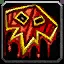
Shaman8 builds
Meta 6The builds most players run.
 Elemental
Elemental
Lightning Elemental: Call of Thunder crit, Lightning Overload, Elemental Fury and Lightning Mastery, with Eye of the Storm against pushback, Tidal Focus for hit and Ancestral Knowledge for Intellect.
Split 32 / 8 / 11 · level order →
Raid ✓ Nov 25 Enhancement
Enhancement
Stormstrike, Flurry, Maelstrom Weapon and Rage of the Farseer, with Elemental for Concussion, Elemental Devastation, Reverberation and Elemental Focus to make the instant spells hit harder.
Split 17 / 34 / 0 · level order →
Healer ✓ Nov 25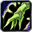
Restoration healerDeep Restoration for Riptide, Purification, Healing Way and Mana Tide Totem, with Thundering Strikes and Ancestral Knowledge from Enhancement for crit and Intellect.
Split 0 / 10 / 41 · level order →
Leveling ✓ Nov 25Elemental leveling
Caster leveling with Elemental Focus, Trial by Fire and Earthbound for kiting, then Lightning Overload, Elemental Fury and Lightning Mastery; Restoration for mana.
Split 33 / 7 / 11 · level order →
Leveling ✓ Nov 25Enhancement leveling
Melee leveling with Stormstrike, Improved Stormstrike, Spirit Weapons and early Flurry, plus Elemental crit (Elemental Devastation) and Trial by Fire.
Split 18 / 25 / 8 · level order →
PvP ✓ Nov 25Elemental PvP
Elemental burst to Lightning Mastery with Eye of the Storm and Elemental Warding, plus Enhancement Toughness, Guardian Totems, Earth's Grasp and Improved Ghost Wolf.
Split 31 / 20 / 0 · level order →
Off-meta 2Uncommon builds that can work.
Elehance (Elemental/Enhancement)
Splits points to get both Lightning Overload/Elemental Fury and Stormstrike/Flurry, weaving melee swings between Lightning Bolts.
Split 29 / 22 / 0 · level order →
Tank ✓ Nov 25Shaman tank (shield + Rockbiter)
One-hand + shield dungeon tank using Rockbiter threat, Spirit Weapons parry, Anticipation dodge and Improved Stormstrike resets, with Restoration for hit and mana.
Split 0 / 40 / 11 · level order →
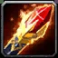
Mage7 builds
Meta 6The builds most players run.
Arcane Power
Arcane Fire: deep Arcane to Arcane Power with Arcane Blast stacks, Arcane Wrath and Missile Barrage, dipping Fire for Improved Fire Blast, Pyroblast and Heating Up, plus Precision for hit.
Split 32 / 16 / 3 · level order →
Raid ✓ Nov 25Fire Combustion
Full Fire to Combustion with Heating Up Pyroblasts, Improved Fire Blast, Critical Mass, Master of Elements and Fire Power, topped up with Arcane Concentration, Missile Barrage and Precision.
Split 16 / 32 / 3 · level order →
Raid ✓ Nov 25 Frost Fingers of Frost
Frost Fingers of Frost
Frost to Ice Barrier with Fingers of Frost, Shatter and 5 Winter's Chill feeding Ice Lance and Cone of Cold, plus Arcane Concentration and Arcane Meditation for mana.
Split 18 / 0 / 33 · level order →
Leveling ✓ Nov 25Frost leveling
Opens with 7 Arcane points for Missile Barrage, then goes deep Frost for Ice Lance, Fingers of Frost, Winter's Chill and Ice Barrier.
Split 13 / 5 / 33 · level order →
Leveling ✓ Nov 25Arcane leveling (chain-pull)
Rushes Missile Barrage and Arcane Concentration, then fishes for procs with rank-1 Frostbolt to chain-pull with little drinking.
Split 32 / 16 / 3 · level order →
PvP ✓ Nov 25Frost PvP
Frost with Frostbite, Permafrost, Improved Frost Nova and Shatter for root-and-burst, plus Improved Counterspell and Magic Absorption from Arcane.
Split 17 / 0 / 34 · level order →
Warlock9 builds
Meta 9The builds most players run.
Affliction Demonic Sacrifice
Deep Affliction: keep Corruption, Siphon Life and Bane of Agony up and channel Wrack to make them tick faster, with Pandemic, Soul Siphon and Shadow Mastery, plus Demonology for Demonic Sacrifice (Imp: +15% Shadow).
Split 35 / 11 / 5 · level order →
Raid ✓ Nov 25Affliction Ruin
DoTs up, then Wrack with full Soul Siphon, plus 18 Destruction points for Improved Shadow Bolt, Bane, Ruin and Agonizing Flames.
Split 33 / 0 / 18 · level order →
Raid ✓ Nov 25 Demonology Demonic Pact
Demonology Demonic Pact
31 Demonology to Demonic Pact so you can sacrifice the Imp and keep the Sayaad, with Demonic Brand and Decimation, plus Improved Shadow Bolt/Bane/Ruin.
Split 2 / 31 / 18 · level order →
Raid ✓ Nov 25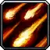
Destruction FirePetless Fire Destruction: sacrifice the Sayaad for +15% Fire, with Incinerate, Shadow and Flame, Fire and Brimstone, Ruin and Aftermath, plus Suppression for hit.
Split 7 / 11 / 33 · level order →
Raid ✓ Nov 25Destruction with Sayaad
The Sayaad stays out with Unholy Power 4, while Affliction gives hit, Improved Life Tap, Amplify Curse and Pandemic.
Split 14 / 4 / 33 · level order →
Leveling ✓ Nov 25Affliction leveling
No-respec Affliction leveling: instant Corruption and hit first, then Unholy Power for the pet, drain-tanking from 30 and Shadow Mastery late.
Split 40 / 7 / 4 · level order →
Leveling ✓ Nov 25Drain-tank leveling (Voidwalker)
Drain-tank leveling: the Voidwalker tanks while Wrack, Soul Siphon and Fel Concentration keep drains going, with Demonology for a tougher, cheaper pet.
Split 33 / 18 / 0 · level order →
Leveling ✓ Nov 25Demonology leveling
Demonology from the start (or respec at 27) so the Sayaad holds 2-3 mobs with Demonic Brand, Demonic Pact at 40, then Affliction for instant Corruption and hit.
Split 20 / 31 / 0 · level order →
PvP ✓ Nov 25Destruction PvP
Bursty Fire Destruction for PvP, with Molten Skin damage reduction, Intensity against pushback, Pyroclasm stuns and Demonology for Stamina and Sayaad control.
Split 0 / 13 / 38 · level order →
Off-meta 0Uncommon builds that can work.
None yet.
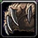
Druid8 builds
Meta 6The builds most players run.
 Moonkin
Moonkin
38-point Balance to Moonkin Form with Eclipse, Vengeance, Improved Starfire and Dreamstate, plus Naturalist (+10% damage), Nature's Focus and Reflection from Restoration.
Split 38 / 0 / 13 · level order →
Raid ✓ Nov 25Feral cat
Cat DPS with Rend and Tear, Predatory Discipline, Shifting Power, Blood Frenzy and Leader of the Pack, Nature's Reach for hit and Heart of the Wild for Strength.
Split 9 / 32 / 10 · level order →
Tank ✓ Nov 25Feral bear tank
Bear tank that can still cat: Lacerate and Primal Bite for threat, Feral Charge interrupt, Thick Hide, and Leader of the Pack/Rend and Tear for cat swaps.
Split 9 / 37 / 5 · level order →
Healer ✓ Nov 25 Restoration healer
Restoration healer
HoT-focused Restoration to Wild Growth with Bloom, Improved Regrowth, Swiftmend and Nature's Swiftness, plus Balance for Genesis and Nature's Splendor.
Split 13 / 0 / 38 · level order →
Leveling ✓ Nov 25Feral leveling
Cat leveling with bear swaps: Furor, Feral Charge, Leader of the Pack, Rend and Tear and Shifting Power, with Genesis/Nature's Reach and Heart of the Wild.
Split 9 / 37 / 5 · level order →
PvP ✓ Nov 25Restoration PvP
PvP Restoration with Feral dips for escapes and interrupts: Feral Swiftness, Brutal Impact, Furor and Feral Charge, plus Wild Growth and Bloom.
Split 0 / 11 / 40 · level order →
Off-meta 2Uncommon builds that can work.
Pure bear (no Balance)
No-Balance bear build: Furor, Natural Reaction 5, Lacerate, Primal Bite and Feral Charge for threat and avoidance, with Heart of the Wild and Naturalist.
Split 0 / 41 / 10 · level order →
Leveling ⚠ Nov 25Balance multi-DoT leveling
Multi-DoT Balance leveling: Improved Entangling Roots and Overgrowth root up to 3 mobs while Moonfire and Insect Swarm tick, ending in Moonkin Form.
Split 43 / 0 / 8 · level order →